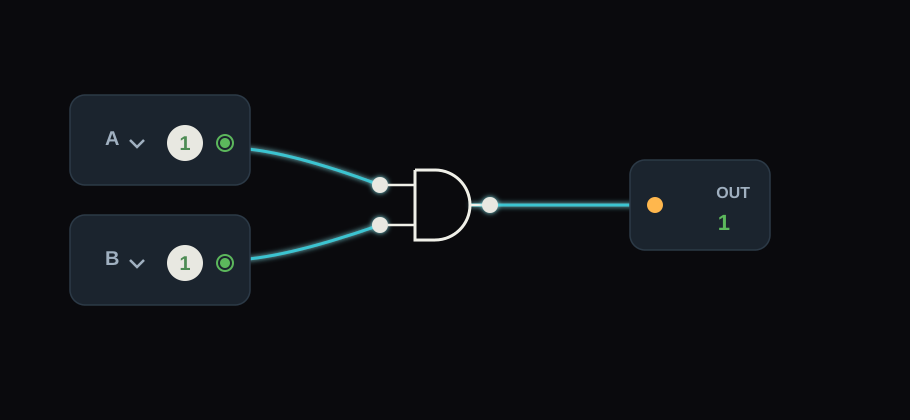
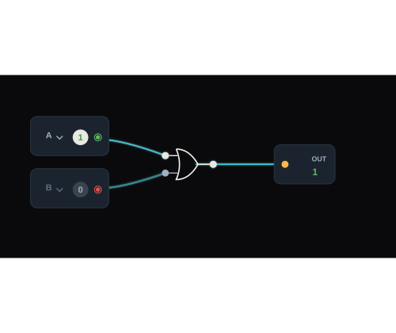
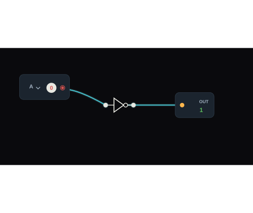
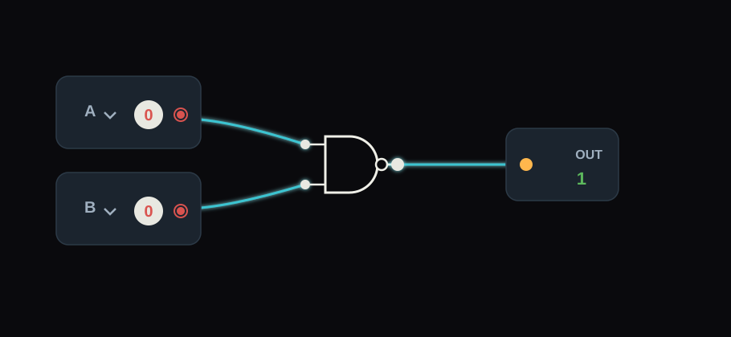
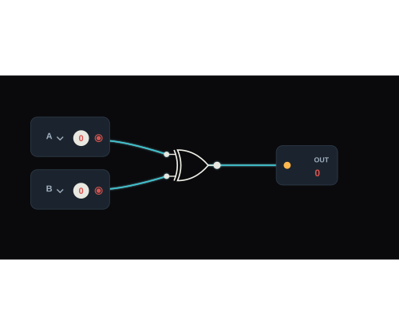
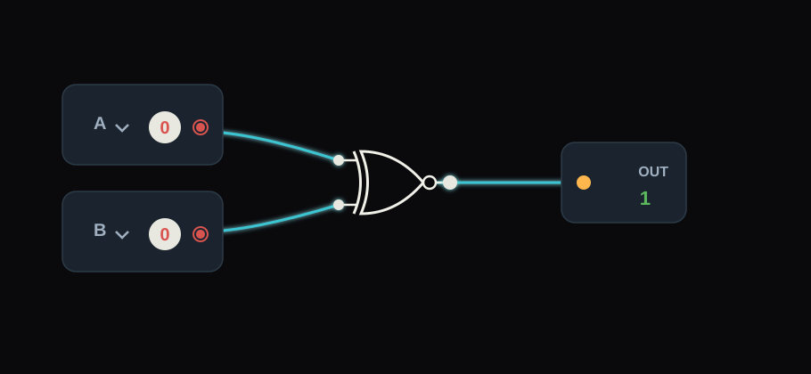

A porta AND só retorna 1 quando todas as entradas são verdadeiras.Clique na imagem para ir direto ao simulador com o exemplo.

A porta OR só retorna 1 quando uma das entradas são verdadeirasClique na imagem para ir direto ao simulador com o exemplo.

A porta NOT inverte o valor, quando a entrada for 1 ela inverte para a saída ser 0.Clique na imagem para ir direto ao simulador com o exemplo.

A porta NAND é a negação da porta AND, quando as entradas forem 0 saíra 1, quando tiver uma entrada 1 ela saíra 1, em demais casos saíra zero.Clique na imagem para ir direto ao simulador com o exemplo.
Clique na imagem para ir direto ao simulador com o exemplo.

A porta XOR retorna 1 apenas quando a quantidade de entradas com valor 1 é ímpar. Ou seja, se houver um número ímpar de sinais ligados, a saída será 1; se for par, a saída será 0.Clique na imagem para ir direto ao simulador com o exemplo.

A porta XNOR é o inverso da porta XOR. Ela retorna 1 quando as entradas possuem o mesmo valor lógico. Também pode ser entendida como uma porta que retorna 1 quando a quantidade de valores 1 nas entradas é par. Caso contrário, a saída será 0.Clique na imagem para ir direto ao simulador com o exemplo.